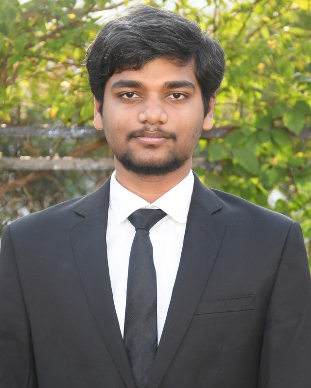

Owned the Person Reader biometric face recognition platform end to end: architecture, roadmap, releases and field support across five countries.
Senior Software Engineer at Apra Labs. For almost six years I have built biometric face recognition, edge inference and the cloud services around them, from Jetson carrier boards up to Azure pipelines that process millions of identities.

id: varmakvlEach entry is something that shipped and was used by customers, with the number we tracked.
Owned the Person Reader biometric face recognition platform end to end: architecture, roadmap, releases and field support across five countries.
Scaled biometric template processing. Designed the first VM architecture, then moved it to containerized Azure Durable Functions.
Optimized EfficientNet models with TensorRT and rebuilt the pipeline around CUDA and cuDNN on Jetson Nano and Orin. 60 FPS without depth, 30 FPS with depth.
Built a template quality and maturity model that scores each enrollment and filters weak templates before they reach matching.
Moved Whisper speech recognition from the cloud to local inference on Jetson Orin Nano and paired it with LLM function calling. About 2 s down to under 400 ms.
Wrote a command sweep service that stops duplicate command delivery to edge devices, cutting downtime by about 60%.
AI-assisted auto labeling with GPT, Grounded SAM and Stable Diffusion to generate training data for YOLOv8 fine-tuning.
Mentored three engineers to own production components and kept four product tracks releasing while acting as primary responder for global incidents.
Presentation attack detection on Intel RealSense depth, so a printed photo or screen cannot pass as a face.
Moved the reader fleet across a major JetPack and Ubuntu jump, regenerating TensorRT engines and keeping devices in the field working.
Facial landmarks, profile photo mismatch detection and confidence scoring to automate identity checks.
CV preprocessing, segmentation and tracking feeding agentic retrieval pipelines that summarize and answer questions about video.
Kernel, drivers, device tree and 2K display support for a custom kiosk build, with A/B signed boot.
Rust on I2C sensors, Node.js and TypeScript services and Cosmos DB, with sensor fusion across barometric, gyro, temperature and light data.
Intercom and accessibility workflows for blind and visually impaired users.
Diagnostic CLIs, watchdogs, RPort and SSH access and rollback-aware installers for devices that cannot be visited.
Card, QR and mobile Bluetooth credentials, plus Destination Dispatch integration with Otis and TKE elevators.
B.Tech, Electronics and Communication Engineering, 2017 – 2021
CGPA 9.23 / 10
Head of R&D at COMET. Winner of Dizhard / Technovate 2020 and runner-up in 2019.
I am based in Bengaluru, open to roles across India and available to join immediately.